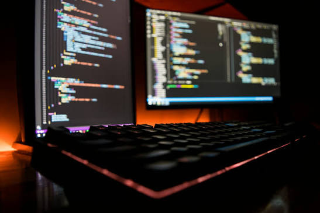
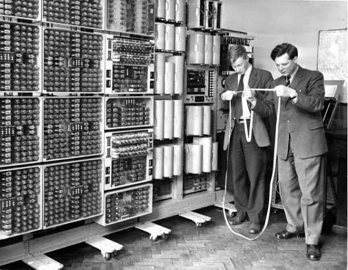
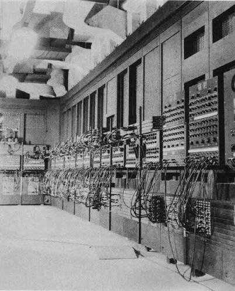

Historia de la Informática
Un recorrido por la evolución de la informática desde sus comienzos hasta la actualidad.
¿Qué es la Informática?

La informática es la ciencia que estudia el procesamiento de la información mediante computadoras.
¿Para qué sirve?
La informática permite almacenar, organizar y procesar información de una manera rápida y sencilla.
La informática en la vida cotidiana
Actualmente utilizamos la informática para estudiar, trabajar, comunicarnos y entretenernos.
Antes y ahora

Las primeras computadoras eran enormes y tenían poca capacidad comparadas con las computadoras actuales.
Datos interesantes

Algunas de las primeras computadoras ocupaban habitaciones enteras y necesitaban mucha electricidad para funcionar.
La evolución
Con el paso de los años, las computadoras se hicieron más pequeñas, rápidas y accesibles para las personas.